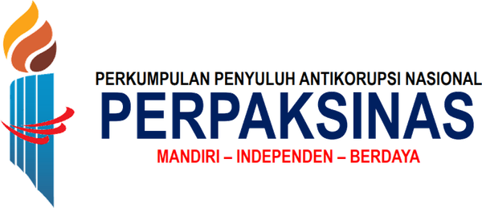
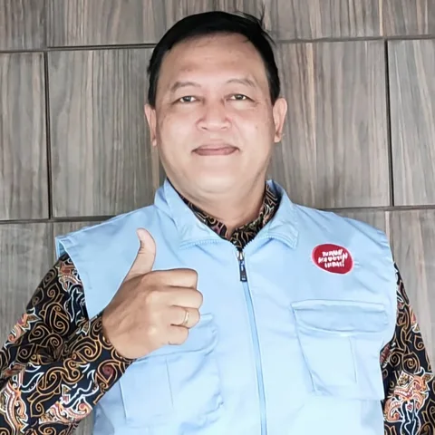

Selamat datang
PERPAKSINAS
Perkumpulan Penyuluh Antikorupsi Nasional
MANDIRI – INDEPENDEN – BERDAYA
Wadah bersama para penyuluh antikorupsi dari provinsi, kabupaten/kota, kementerian/lembaga, dan asosiasi di seluruh Indonesia.

Tentang
Apa itu PERPAKSINAS
PERPAKSINAS menghimpun para penyuluh antikorupsi dari berbagai daerah dan instansi. Penyuluh bekerja bersama KPK untuk menyebarkan nilai integritas kepada masyarakat, aparatur, dan pelajar.
Tata kelola yang jelas
Organisasi dikelola secara profesional dan transparan dalam setiap kegiatan penyuluhan.
Bebas intervensi
Peran pencegahan dan edukasi antikorupsi dijalankan tanpa tekanan politik.
Kapasitas anggota
Anggota didorong untuk makin cakap dan memberi dampak positif di daerahnya.
Sejarah singkat
Diresmikan 24 November 2023 di Riau melalui musyawarah nasional. Lahir dari deklarasi TAPAKSIAPI pada 10 Desember 2022.
Riwayat
Perjalanan Paksi dan PERPAKSINAS
Tonggak penting dari forum penyuluh antikorupsi sampai PERPAKSINAS terbentuk dan terus bertambah.
Lembaga sertifikasi KPK memperoleh lisensi BNSP. Sertifikasi penyuluh dan ahli pembangun integritas dijalankan sejak itu.
Forum di tingkat provinsi, seperti Jawa Tengah dan Jawa Timur, mulai berdiri.
Peringatan Hakordia 2021 menjadi cikal bakal TAPAKSIAPI.
Forum Paksi Jambi (KOPAJA) dikukuhkan 2 Maret 2022. Jambore Nasional Paksi berlangsung 20–23 Mei 2022.
Forum temu aksi penyuluh dan ahli pembangun integritas dibuka di Jakarta. Pada akhir 2022 tercatat sekitar 41 forum Paksi-API di seluruh Indonesia.
Musyawarah nasional membentuk PERPAKSINAS dengan Yudi Ismono sebagai Ketua Umum. Pengurus periode 2023–2026 ditetapkan.
Pada Februari 2024 KPK mencatat 37 forum provinsi, 8 forum K/L, 1 forum asosiasi, dan PERPAKSINAS.
Forum Paksi Maluku Utara dikukuhkan 29 September 2025. Pada 2026 PERPAKSINAS mewadahi 49 forum dan 2.958 penyuluh yang sertifikatnya masih aktif.
Forum Paksi Sumatera Barat dikukuhkan 8 September 2026. Forum Paksi Sulawesi Utara masa bakti 2026–2030 dikukuhkan 21 September 2026.
Kepengurusan
Pengurus PERPAKSINAS
Susunan pengurus periode 2023–2026.

Ketua dan Sekretariat
Dewan Pembina
Dewan Pengawas
Tugas & Wewenang
Tugas pokok dan fungsi
Uraian tugas tiap organ. Klik untuk membuka.
Dewan Pembina
- Memberikan saran dan bantuan kepada Pengurus dalam melaksanakan seluruh kegiatan organisasi.
- Memberikan teguran dan arahan apabila Pengurus dinilai menyimpang dari AD/ART.
- Membantu memelihara dan mengembangkan hubungan baik dengan masyarakat dan Pemerintah.
Dewan Pengawas
- Melakukan fungsi pengawasan atas penggunaan kekayaan dan keuangan organisasi.
- Mengawasi kegiatan konsolidasi organisasi di tingkat nasional dan daerah.
- Menerima pengaduan pelanggaran etika dan membentuk Dewan Etik secara ad-hoc/temporer.
Ketua Umum
- Melakukan koordinasi, supervisi, fasilitasi, serta pembinaan seluruh urusan organisasi.
- Melaksanakan keputusan Musyawarah Nasional (Munas) dan Rapat Kerja Nasional (Rakernas).
- Mewakili organisasi dalam hubungan kemasyarakatan dan lembaga tinggi negara.
Bidang-bidang operasional
- Organisasi, Advokasi & Hukum: pendataan anggota Paksi, fasilitasi hukum, dan pengembangan forum regional.
- Kerja sama, Humas & IT: pengelolaan media informasi, hubungan antarlembaga, dan sistem informasi.
- Umum & SDM: peningkatan kompetensi penyuluh, layanan peraga penyuluhan, dan pendataan anggota.
- Pembinaan & Litbang: riset efektivitas metode penyuluhan dan pengembangan modul edukasi antikorupsi.
Berita
Pengukuhan forum dan peresmian Perpaksinas
Ringkasan berita yang pernah dimuat di situs sumbernya. Klik kartu untuk membaca ringkasan dan sumber asli.
Forum
Forum PAKSI dan API
Ringkasan forum penyuluh antikorupsi yang terhimpun di PERPAKSINAS.
Komposisi kategori
Sebaran wilayah
Anggota
Direktori penyuluh
2.958 penyuluh antikorupsi bersertifikat BNSP masih aktif. Daftar lengkap dari data resmi LSP KPK ditampilkan di bawah.
Buka di tab baru